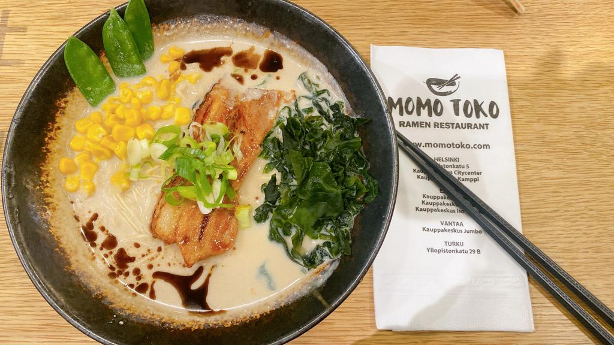

Momotoko - Japanese handmade noodles restaurant
This branch I visited was from CityCenter, in the 2nd floor.
Address: Kaivokatu 8, 00100 Helsinki

You can find more information about the restaurant and menu from Momotoko's Website
There are some of my favourite dishes that I can recommend:
Above picture was my second time visiting Momotoko for lunch. One reason I chose the restaurant from this time was that it was not crouded even in peak time for officers' lunch. I was again satisfied with its service as well as the delicious dish.

The first ramen I tried in Helsinki was not from Momotoko, and that bowl of ramen was quite salty. I was afraid that Momotoko ramen would be the same.
However, when my friend recommended this for me, I was not disappointed but super happy with this time. This is called "LAKSA EBI TEMPURA CURRY", no.6 that you can find from the menu.

The soup favour is sweet from the pork broth I think. It has the unami taste, the fifth taste besides sweetness, sourness, bitterness and saltiness. The ramen is soft and cooked in the right amount of time.
As other recipe, there is always half-boil juicy eggs in that bowl of ramen. This one also has the lotus roots, corns and some dry fungus.